The Washington Post designer application
Projects from the Sacramento Business Journal, Elon News Network and The Virginian-Pilot
Sacramento Business Journal
Forty Under Forty | Print design, art direction, video editing and social media design
The Forty Under Forty (also known as 40 under 40) special section took over two months to put together. The theme "channel your inner child" captured the imagination, enthusiasm and innovation present in kids that successful adults must also embody.
Legos were used to capture the heart of the theme, and I worked closely with the photographer to take photos of the Lego sculptures I built. We also scouted for photo locations for the honorees' portraits before deciding on the Sacramento Children's Museum. I attended multiple shoots to ensure the images captured the fun, playful attitude of the edition and the character of the honorees.
This is a wraparound cover. The left half of the image with the pile of Legos is the back of the section, while the sculpture is on the cover. It is a composite image, and every brick on the cover is also on the back, showing the deconstructed "40/40."
Click here to view a selection of pages from the edition.
Video
For social media promotion, I filmed a timelapse of me building the "40/40" out of Legos with the help of photographer Dennis McCoy and reporter Scott Rodd. I edited the video in Adobe Premiere Pro to speed up portions and add music. Full disclosure, this video was filmed after the cover image was taken, so it's not the exact same structure, but it still represents the process of creating the cover and is a fun behind-the-scenes look.
Web
For the web presentation, I used ACBJ's collections feature, which created a slideshow of the winners that is able to contain large amounts of text and photos.
Watch the video above for a narrated tour of the webpage, or click here to visit.
Sacramento Business Journal
Betting big on Natomas | Print design, infographic design, social media design and video editing
This article was a cover story for Sacramento Business Journal's weekly newspaper, written by reporter Scott Rodd. It explains David Bugatto's role in developing North Natomas, a region in northern Sacramento. For over 20 years, Bugatto worked to bring companies to the area, despite a flood moratorium halting land sales for nearly seven years.
The long and complex storyline was told with a variety of visual elements to show the contrast in what the land looked like over two decades ago and how it looks currently. The timeline also demonstrated the magnitude of the work put in to make those sales.

The portrait of Bugatto on the cover was taken by photographer Dennis McCoy. Before he went to the photoshoot, we discussed the location and how Bugatto needed to be at the construction site for one of the largest land sales he made in the past year. We also talked about getting a variety of angles, especially one from below to put Bugatto in a more official and powerful position.
The inside spread opens with two photos. The photo on the left is from 1995, and the photo on the right is from 2018. These were placed next to each other to emphasize the dramatic change over time.
Click here to view the full layout.
Infographic
This infographic is a timeline merged with a chart to show the frequency and size of Alleghany Properties' (the company Bugatto is president of) land sales. Land sales are above the line and all other events are below the line, to show that despite a lack of sales during the flood moratorium, Bugatto was still working so he could hit the ground running after it was lifted.
Video
Bugatto provided drone footage he had taken of the North Natomas area, so I edited the video in Adobe Premiere Pro to speed up portions and add labels. All the land highlighted represents significant areas to Alleghany Properties and northern Sacramento.
Web
The webpage brings together a wide variety of elements, including the drone photography, drone footage and a photo gallery. To translate the infographic online, it was broken up into three sections and spaced throughout the article so it wasn't unwieldy or distracting from the story.
Watch the video above for a narrated tour of the webpage, or click here to visit.
Elon News Network
The Battery Man | Print design, web design, social media design and photography
The Battery Man was a two-month team project about an Elon freshman who designs and builds his own electric motorcycles. I worked with Elon News Network reporter Anton L. Delgado, and we traveled to the freshman's home twice, where I took photos and Delgado recorded interviews and shot video. I also coded the website by hand, created the social media graphics and planned its promotion.
This was a very collaborative piece. After preliminary research, we sat down and discussed graphic ideas, what photos we wanted and how to present it, both online, in print and as a package for the broadcast. Upon returning from traveling, we worked together to finalize graphics, structure the article and decide on the layout of the website.
Web
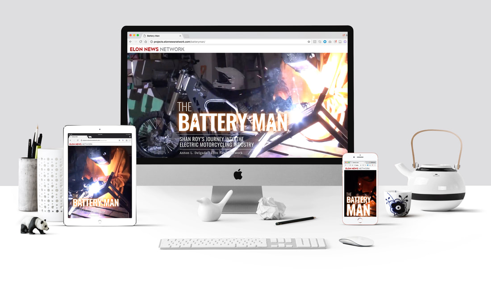This webpage was coded using HTML, CSS and JavaScript. It opens with a full-width video of Shan welding metal for one of his bikes. Throughout the article are images, videos and infographics, including an interactive graphic about the different parts of his motorcycle. There is also a section involving parallax scrolling that shows Shan tightening the bolts on his bike and explaining how he works from his home.
Click here to view the webpage.
Social
 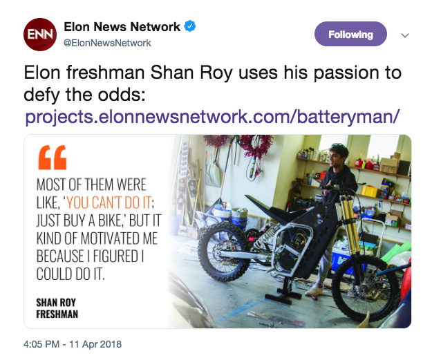
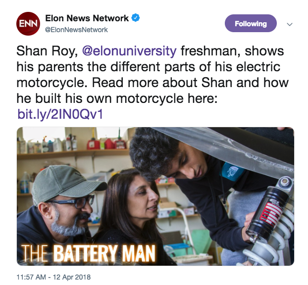
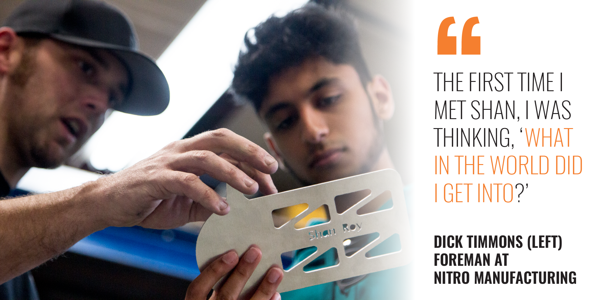
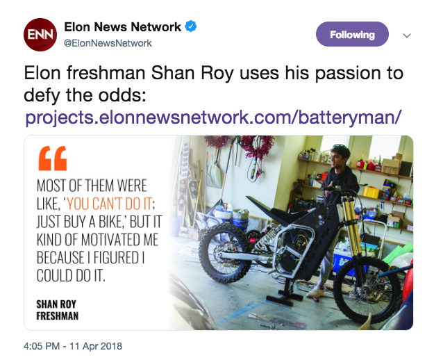
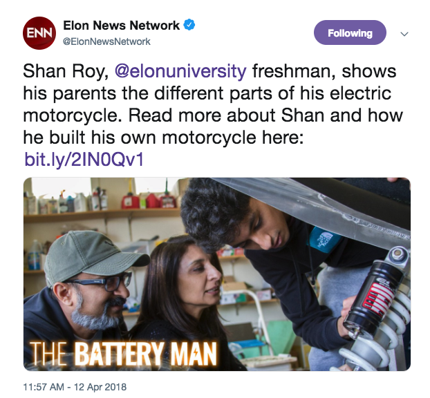
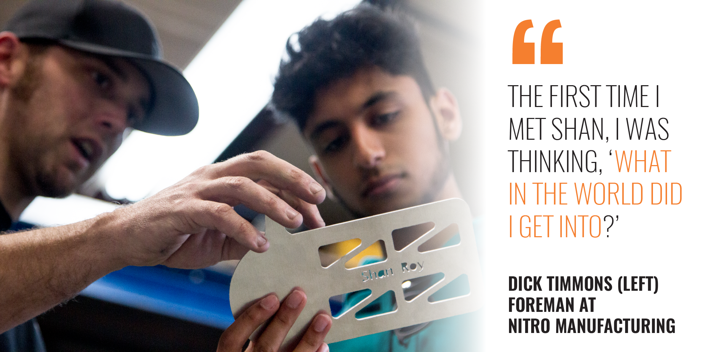
To promote the story, I created a variety of graphics for social media, including a GIF of Shan welding.
Click the images above to see the original tweets.

The print layout for the article was the front page story for the week. The four inside pages are removable and create a self-contained edition. The orange glow theme was translated from online to print, but otherwise I wanted to keep the layout clean to let the photography stand out.
Click here to view the full layout.
Photography
Freshman Shan Roy stands with the latest version of his electric motorcycle, “The 1.0,” in his garage in Mooresville, North Carolina, March 31.
Sparks fly as freshman Shan Roy welds metal for his new electric motorcycle, “The 1.0,” at his home in Mooresville, North Carolina, Feb. 25. Shan has been building electric motorcycles since high school.
Shan Roy explains the design of his suspension to his parents, Farid (left) and Laila (right) Roy, March 31.
Elon University freshman Shan Roy rides his homemade electric motorcycle down Pinnacle Lane in Mooresville, North Carolina, Feb. 25.
I took all of the photos for the story on a Canon EOS 7D. I wanted to capture a variety of aspects of Shan's process along with people who are important to him.
Elon News Network
Best Of 2017 | Print design, web design, social media design and planning
I led the production of Elon News Network's inaugural Best Of 2017 edition. Working with multiple teams, I helped decide the categories, put together a survey, promote voting on social media, tally votes, decide winners, track content and photos, edit articles and edit articles. On my own, I coded the website, decided the design theme and created the cover.
This was a big team effort, coordinated primarily with Web Producer Alex Hager and Managing Editor Emmanuel Morgan.
Web

This website was coded using HTML, CSS and JavaScript. It starts with a landing page containing a note from the editor and all of the categories in the competition. Each section has a different webpage with the names of the winners, a brief article, the runners-up and a small factbox.
Click here to view the website.
For this edition, I decided to focus on really bright, neon typography to convey the excitement and fun of the year. Different colors coordinate to different sections. I designed the cover and created the page templates, and had my design team work on page layout.
Click here to view the full edition.
Sacramento Business Journal
Fastest Growing Companies | Print design, infographic design, art direction and social media design
The Fastest Growing Companies special section was themed around the idea of money literally growing out of the ground. I designed the print layout and coordinated with our photographer for photos, worked with our research director Sharon Havranek to get the data for the infographics, and I put together a GIF for social media.
When thinking of ways to show the growth of companies, plants were a recurring theme. So I decided to unite how we measure company growth (in money) with a typical picture of growth (plants). Hence, money plants. I hand-crafted the money and did the set up before working with our photographer to take the pictures.
Click here to view the full edition.
Infographic
This spread features a variety of storytelling techniques to break down data on all 51 of the fastest growing companies. At the bottom are more money plants, where each dollar represents $100 million and the plants display the top 10 companies ranked by 2017 revenue.
Social
This GIF was created in Adobe After Effects and shows all the money plants growing (get it?).
Click here to view on Twitter.
Daily news design | Print design
During summer 2017, I worked as the design intern at The Virginian-Pilot where I designed pages on a daily deadline.
Piling Up
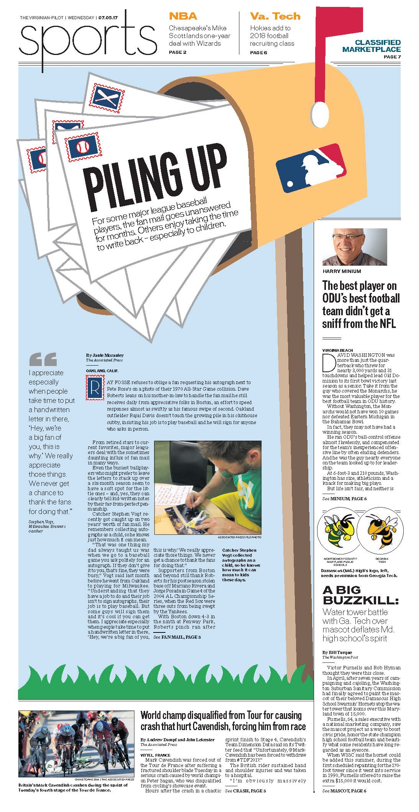Page design and illustration | This article was about baseball players responding (or not responding) to fan mail. I created an illustration, wrote a corresponding headline and added baseball stamps and a stamp drop cap to link everything together.
Health care bill
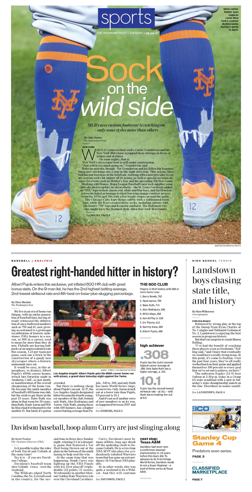Page layout | This page balances a strong national news article about the healthcare bill with a more local story about a year-round farmers market that closed.
Drug charges
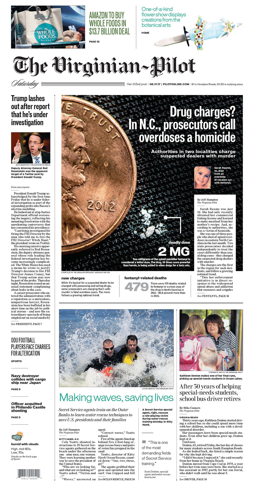Page layout | For an article on a case regarding a fentanyl overdose, I decided to highlight the potency of the drug along with a variety of fentanyl facts and the headshot of a victim.
Shooting unnerves Capitol
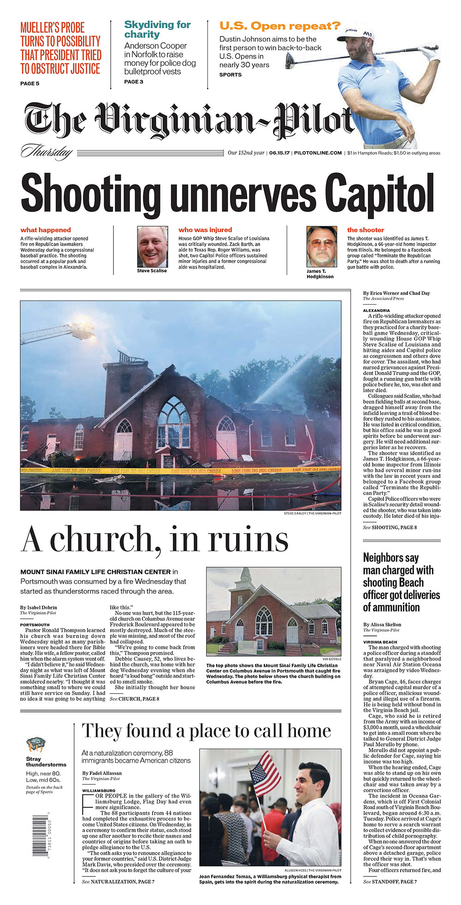Page layout | After the shooting during a congressional baseball practice, the front page was rearranged to feature an important national news article as well as a tragic story about a church that burned down.